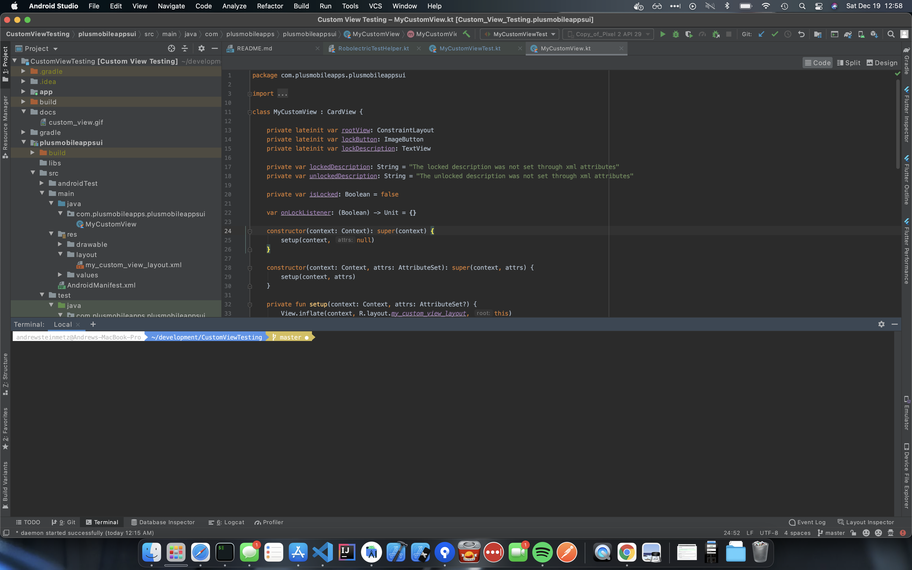

My Mac Developing Environment

A list of all the different programs, packages, and tips for how I configure my Mac for development.
Installed From Terminal
Home Brew - helps you install packages from the command line more easily similar to linux's package manager
Git - version control system
iTerm2 - terminal replacement
Oh My ZShell - customize the terminal
- I use the
agnostertheme. To change open up~/.zshrcfile and change the following line
- If the theme is not rendering properly in iTerm, then install Powerline fonts. Copy/paste the following to install. Then in iTerm preferences, check the option to
Use a differnt font for non-ASCII textand switch the font toMesio LG L for powerline. Screen shot
# clone
git clone https://github.com/powerline/fonts.git --depth=1
# install
cd fonts
./install.sh
# clean-up a bit
cd ..
rm -rf fonts
- Oh My ZShell Plugins that I use -
plugins=(git adb vscode)
Downloadable Applications
Visual Studio Code - text editor and markdown editor
- to open files from the command line follow these instructions
git config --global core.editor "code --wait"- to configure git as the default editor
Sourcetree - version control GUI for Git repositories
Spectacle - window control management tool for Mac
Android Studio - IDE for developing Android applications
IntelliJ Idea - IDE that Android Studio was based off and I use for developing any Kotlin Multiplatform apps
Drop to GIF - easy tool to convert videos to GIFs that I use for adding GIFs to pull requests
Postgres.app - mac app that makes it dead simple to start up a PostgreSQL server
Bash Profile
Since I use Oh My ZShell, my bash profile is sourced from .zshrc file in my home directory as opposed to .bash_profile. My bash profile consists of a bunch of git aliases and helper functions for dealing with the Android SDK. For some Android specific bash profile functions & aliases, check out Android Bash Profile and Terminal Tricks
alias edit_profile='code ~/.zshrc'
alias source_profile='source ~/.zshrc'
alias gs='git status'
alias branches='git branch | cat'
alias rbranches='git branch -r | cat'
alias gamend='git commit --amend'
# remove the user name and machine from the start of the terminal prompt
# should only readout the current file name.
export DEFAULT_USER="$(whoami)"
# when ran from the root of a git repo, will take an argument for the branch name
# will then check if your current work station is clean, if not you can type "stash" to stash them
# or will do nothing and not checkout the branch
# After finished reviewing code, hit enter and it will remove the code reviewed branch from your local machine
# and checkout your existing branch
code_review() {
branch=$(git branch | sed -n -e 's/^\* \(.*\)/\1/p')
git diff-index --quiet HEAD
if [ $? = 1 ]; then
echo "Branch: $branch is dirty, if you would like to stash your changes type stash"
read input
if [ "$input" = "stash" ]; then
git stash
git fetch
git checkout $1
echo "Hit enter when you are done reviewing this branch"
read userInput
git reset --hard
git checkout $branch
git branch -d $1
git stash pop
else
echo "Cool, nothing happened"
fi;
else
git fetch
git checkout $1
echo "Hit enter when you are done reviewing this branch"
read userInput
git reset --hard
git checkout $branch
git branch -d $1
fi
}
Change Location of Where Screenshots Get Saved
Open up a terminal and enter the following two commands.
For me, I typically save any screenshots in ~/Pictures/screenshots.
Then if you would like even quicker access to your screenshots, I will click and drag that folder to the bottom right section of dock next to Downloads.
Then whenever you take a screen shot, you will see it show up in your bottom toolbar.
Just a reminder to take a screen shot of the whole screen, you can use the following command.
Then to take a screen shot of just a portion of the screen you can use: